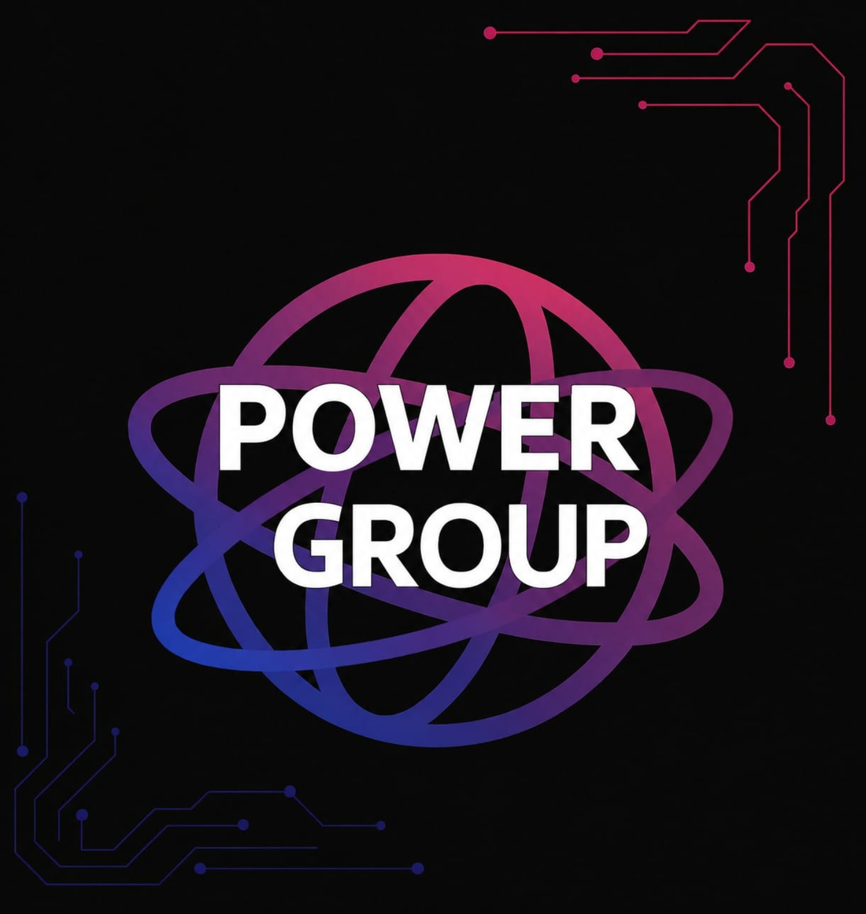
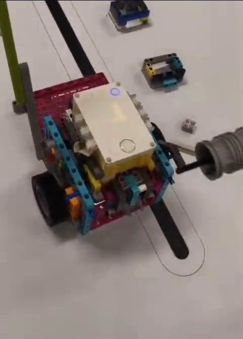
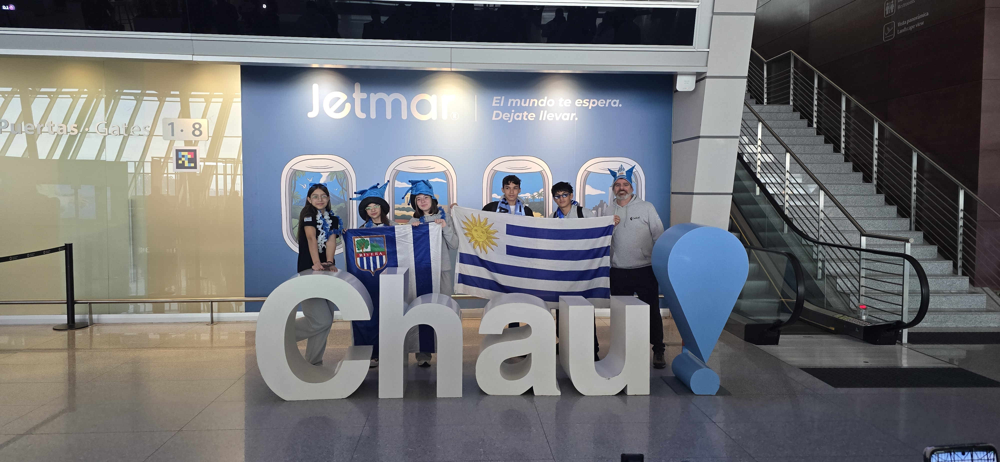

POWER GROUP / TOOLS2:30↗PROBÁ. MARCÁ. SEGUÍ MEJORANDO.
ACTUAL · HERRAMIENTA DISPONIBLE
Power Group Scorer
Calculadora de puntajes de entrenamiento con cronómetro de 2:30, avisos sonoros y guardado de partida en tu navegador.
Abrir calculadora ↗
POWERROBÓTICA · RIVERA, URUGUAY
Somos Power Group. Construimos robots, exploramos soluciones y aprendemos a llegar más lejos, juntos.

EN MODO PRUEBA ●01 / NUESTRA FORMA DE HACER
La robótica nos reúne. Lo que aprendemos juntos nos hace crecer.
En Power Group compartimos construcción, programación y proyectos. Cada prueba es una oportunidad para escuchar otra idea, encontrar un error y buscar una solución en equipo.
Una idea se entiende mejor cuando la ponemos en movimiento.
El conocimiento crece cuando podemos explicarlo y ayudar a alguien más.
02 / DEL BOCETO A LA PRUEBA
Calculadora de puntajes de entrenamiento con cronómetro de 2:30, avisos sonoros y guardado de partida en tu navegador.
Abrir calculadora ↗Nuestro proyecto anterior, también llamado Depresor de terreno, explora cómo la robótica puede ayudar a excavar preservando los objetos y la información que los rodea.
Investigamos cómo una excavación controlada y un registro de ubicación y profundidad pueden ayudar a conservar el contexto de los hallazgos.
El panel del proyecto reúne las imágenes del prototipo, las etapas de funcionamiento propuestas y la metodología prevista para evaluarlo.
Nuestro archivo irá creciendo con los proyectos anteriores y los nuevos desafíos.
El lugar desde el que compartimos nuestra experiencia como equipo de robótica.
UY / RIVERAUn espacio para reunir al equipo, explorar herramientas y dar forma a los proyectos.
Próximamente: recorrido fotográfico por nuestro lugar de trabajo.
04 / CUANDO ESTAMOS JUNTOS
De la primera idea al próximo intento.
Escuchamos propuestas y hacemos preguntas.
Las piezas, el código y las ideas empiezan a conectarse.
Observamos lo que funciona y lo que podemos mejorar.
Contamos lo aprendido y celebramos los avances.
NUESTRA TEMPORADA / 2026
Este será nuestro espacio para documentar el trabajo de este año en FIRST LEGO League: lo que investigamos, lo que construimos y cómo lo hacemos juntos.
Acá contaremos la pregunta de investigación de este año, las personas que consultemos, nuestras propuestas y cómo las iremos mejorando.
Proyecto actual: problema, investigación, solución, pruebas y presentación.
Todavía no hay una entrada de este año cargada en este apartado.
Reuniremos el diseño del robot, los accesorios, el código, las estrategias de misiones y las mejoras de esta temporada. El diseño y el juego del robot tendrán sus propios registros.
Robot de este año: versiones, accesorios, decisiones de programación y pruebas en pista.
Todavía no hay una entrada de este año cargada en este apartado.
Descubrimiento, Innovación, Impacto, Inclusión, Trabajo en equipo y Diversión. Profesionalismo Cordial y Coopertición atraviesan nuestra manera de vivirlos.
Exploramos ideas y desarrollamos nuevas habilidades.
Entrevistas, preguntas de investigación y aprendizajes nuevos.
Todavía no hay una entrada de este año cargada en este apartado.
Buscamos soluciones con creatividad y persistencia.
Bocetos, prototipos, pruebas y mejoras realizadas.
Todavía no hay una entrada de este año cargada en este apartado.
Usamos lo aprendido para aportar a nuestra comunidad.
Herramientas compartidas, visitas y aportes a otras personas.
Todavía no hay una entrada de este año cargada en este apartado.
Escuchamos, respetamos y valoramos cada aporte.
Decisiones compartidas y oportunidades para que todos participen.
Todavía no hay una entrada de este año cargada en este apartado.
Combinamos nuestras habilidades para avanzar juntos.
Organización de tareas, acuerdos y ayuda entre integrantes.
Todavía no hay una entrada de este año cargada en este apartado.
Disfrutamos el proceso y celebramos lo que hacemos.
Juegos, momentos compartidos y celebraciones del equipo.
Todavía no hay una entrada de este año cargada en este apartado.
MÁS ALLÁ DEL RESULTADO
Buscamos hacer un trabajo de calidad, reconocer el esfuerzo de los demás y tratarnos con respeto, incluso cuando algo no sale como esperábamos.
Acá reuniremos ejemplos de respeto, cuidado de los materiales, responsabilidad y ayuda durante las actividades.
Todavía no hay una entrada de este año cargada en este apartado.
Competir también puede ser colaborar: compartimos conocimientos y ayudamos a otros equipos para que todos podamos aprender.
Acá reuniremos intercambios con otros equipos, recursos compartidos y situaciones en las que aprendimos juntos.
Todavía no hay una entrada de este año cargada en este apartado.
Iconos de los seis valores: FIRST. Los símbolos de navegación son ilustraciones de esta web. FIRST®, Gracious Professionalism® y Coopertition® son marcas de FIRST.
BITÁCORA / EXPERIENCIAS COMPARTIDAS
Conversamos con Eduardo Palermo y Pablo Macedo para acercarnos al trabajo de los historiadores y enriquecer nuestras preguntas.
Una experiencia que forma parte de los recuerdos del equipo, junto a los encuentros con otros estudiantes.
Presentamos nuestro proyecto a grupos escolares y practicamos cómo explicar nuestras ideas a otras personas.
Participamos en las Olimpiadas de Robótica y Programación, con la experiencia de conocer el Antel Arena como equipo.
Las familias, las referentes pares y quienes nos acompañan en el Ceilab también son parte del camino: reuniones, apoyo desde casa y muchas horas compartidas.
VIAJES / APRENDER TAMBIÉN ES SALIR
El robot viaja con nosotros. También viajan las ideas, los nervios, las banderas y las ganas de compartir lo que hacemos.
Las Olimpiadas nos llevaron a Montevideo y al Antel Arena. En el libro del equipo guardamos recuerdos de esa primera experiencia en el lugar, de los días de actividad y de los momentos compartidos después de la jornada.
Además del robot y las presentaciones, el viaje también tuvo espacio para acompañarnos, conversar y compartir una comida después del primer día. Esos momentos forman parte de nuestra historia como equipo.
Este espacio reunirá el álbum y las anécdotas de nuestro paso por Montevideo.

Llevamos nuestras camisetas, las banderas de Uruguay y los proyectos de Power Group a México. El stand fue nuestro punto de encuentro para mostrar el trabajo del equipo.
Entre actividades del evento y recorridos compartidos, también hubo tiempo para conocer a otras personas, divertirnos y guardar recuerdos con quienes nos acompañaron.
Explorá las ocho fotos del álbum y conocé algunos de los momentos del viaje.
ÁLBUM DEL VIAJE
El stand, los encuentros y los momentos que compartimos fuera de la pista. Tocá una foto para ampliarla y recorrer la colección.
BITÁCORA / NUESTRO ROBOT
El libro del robot comienza con la construcción de nuestro primer modelo EV3.
Un primer diseño con SPIKE abre una nueva etapa de construcción y programación.
Dos motores pequeños, dos grandes, dos sensores de luz y un giroscopio integrado, según el libro del equipo.
Nuevas versiones del robot y sus mecanismos, documentadas junto a nuestras decisiones de programación.
Agrupar misiones cercanas, reutilizar un mismo accesorio y aprovechar los desplazamientos: el libro explica cómo buscamos recorridos más eficientes.
Próximamente: imágenes de cada versión y detalles de sus mejoras.
05 / EL TALENTO DEL EQUIPO
Un espacio para que cada integrante muestre lo que sabe hacer, lo que está aprendiendo y sus propias creaciones.
Tocá un nombre en la foto para conocer a cada integrante.
De una idea a una secuencia de instrucciones. Fede aporta programación y construcción de accesorios; el libro del robot permite compartir las decisiones y las pruebas del equipo.
Programar, construir, documentar y comunicar: cada aporte ayuda a que el proyecto avance. Seguiremos sumando creaciones y ejemplos del equipo.
06 / ASÍ SE VE POWER GROUP
LA PRÓXIMA IDEA PUEDE EMPEZAR CON UNA CONVERSACIÓN